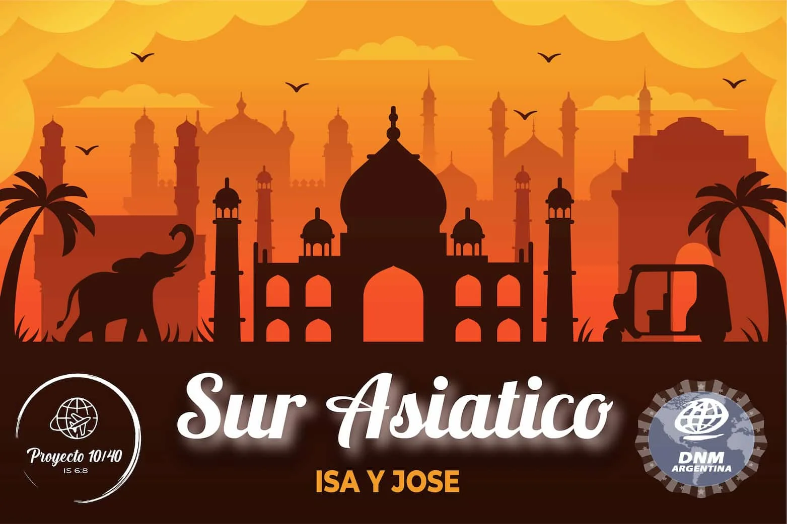

Se parte
de los No Alcanzados
Somos Isa y Jose
Pertenecemos a la familia
del Centro Cristiano Cba de los pastores Masalyka.
Nuestros Objetivos
Hacer discipulos
El díscipulo es quien sigue a Jesús de manera incondicional. Prepararemos obreros con esa mision en el corazon
Entrenar a los locales
Animo y fortaleza necesitan los hermanos de la iglesia, para motivarlos a estudiar la palabra y que ellos alcancen a su generacion
Reinvindicar a mujeres y a niños
Las mujeres y los niños no tienen parte en la sociedad. El evangelio reinvindica y da nuevas oportunidades en ellos

❮
❯
쮺칩mo orar?
- 🛐 Por la Familia
- 🛐 Por los recursos
- 🛐 Por la gira